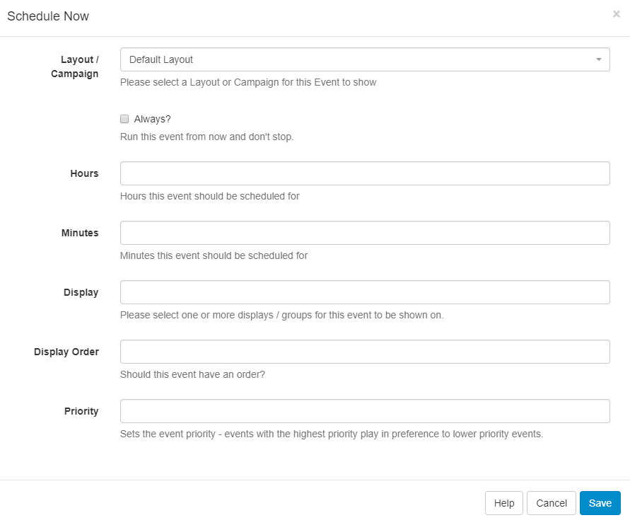

Schedule Now
Schedule Now provides a quick way to Schedule a Campaign or Layout for a specific amount of time.
This is useful for displaying temporary/important notices on Displays.
Schedule Now is available across the CMS and is available from the following pages:
- Campaign - row menu for selected Campaign
- Layout - row menu for selected Layout
- Layout Designer - on the Actions tab
- Display - row menu for selected Display

Complete the form fields as required.
Time zones
Events created using Schedule Now will always have the Run at CMS time option selected. This means that the event will be adjusted for each Display time zone and forced to run from the time "Save" is pressed. Please see Run at CMS time for further information.